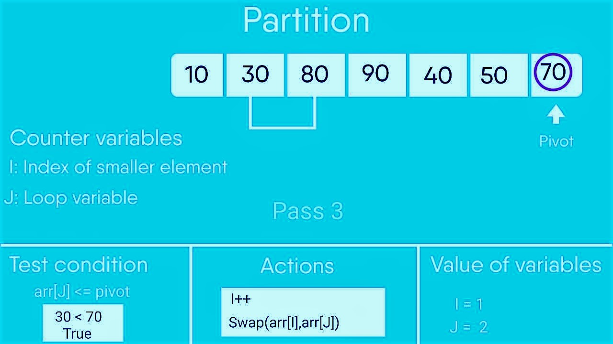

Average Complexity O(n X log n)
Best Case O(n X log n)
Worst Case O(n2)
Space Complexity O(n)

Description:
Quicksort is a divide-and-conquer algorithm. It works by selecting a 'pivot' element from the array and
partitioning the other elements into two sub-arrays, according to whether they are less than or greater than the
pivot. For this reason, it is sometimes called partition-exchange sort.[4] The sub-arrays are then sorted
recursively. This can be done in-place, requiring small additional amounts of memory to perform the sorting.
Quicksort is a comparison sort, meaning that it can sort items of any type for which a "less-than" relation
(formally, a total order) is defined. Efficient implementations of Quicksort are not a stable sort, meaning that
the relative order of equal sort items is not preserved.
Mathematical analysis of quicksort shows that, on average, the algorithm takes {\displaystyle O(n\log
{n})}O(n\log {n}) comparisons to sort n items. In the worst case, it makes {\displaystyle O(n^{2})}O(n^{2})
comparisons.